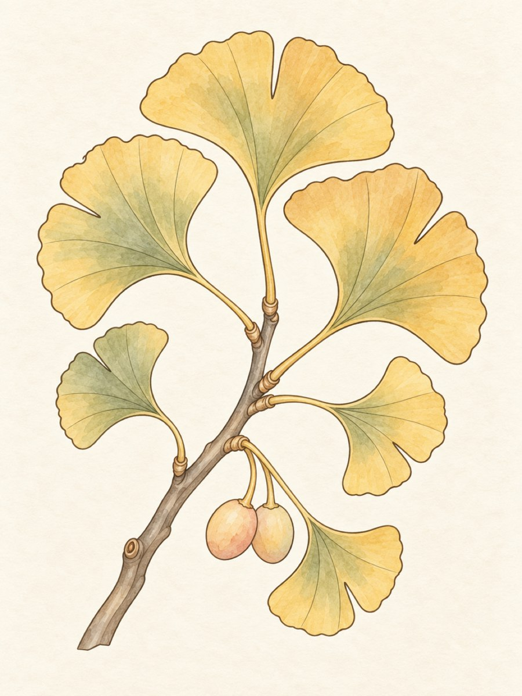
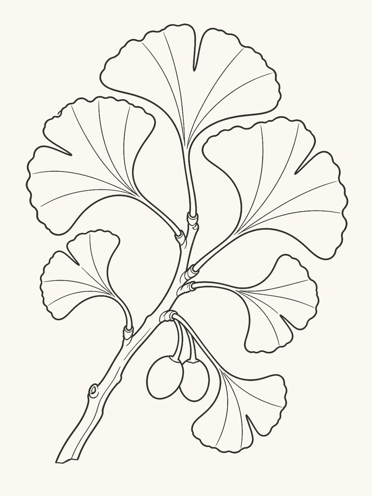
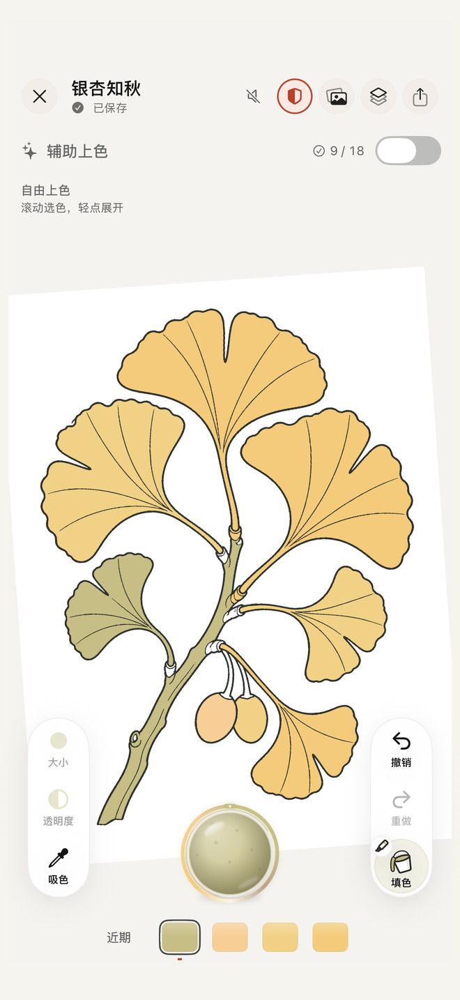
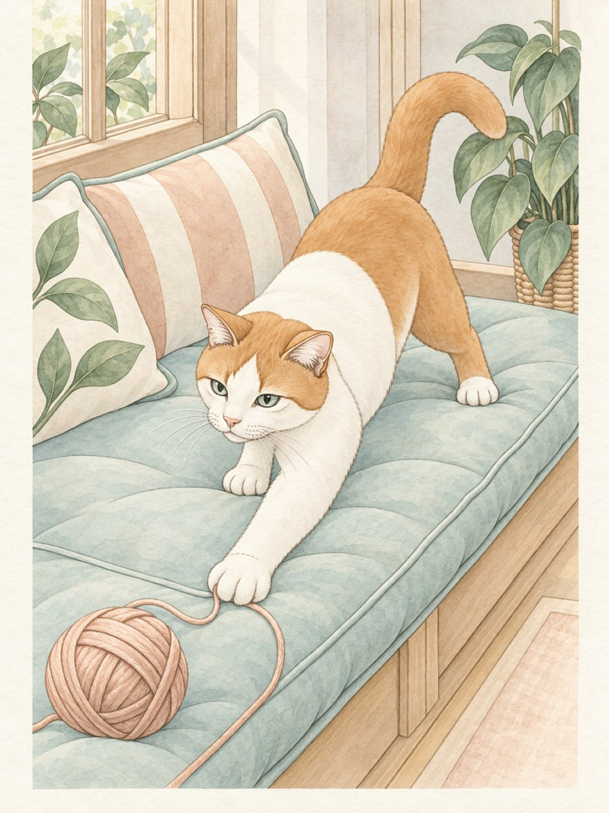
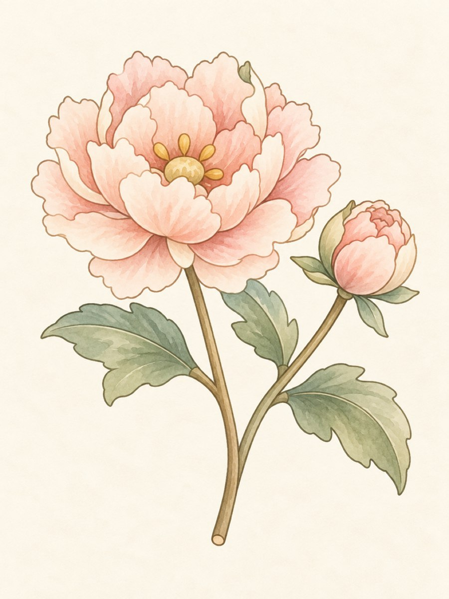
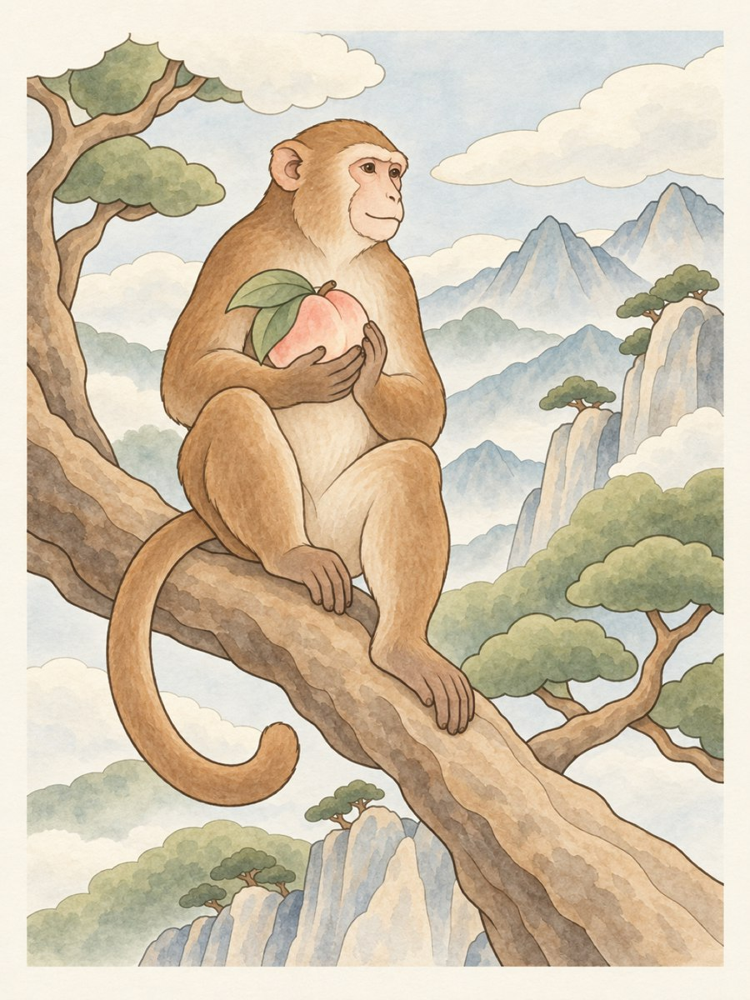
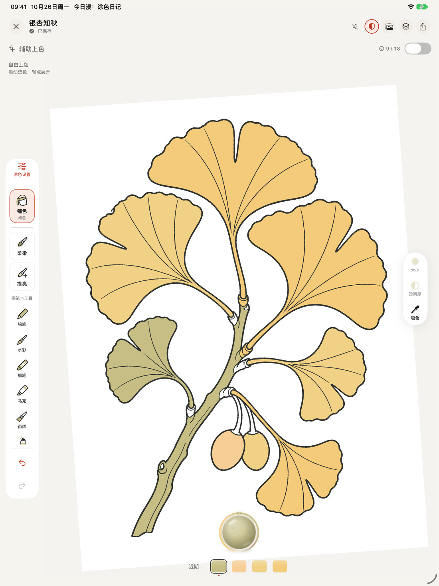
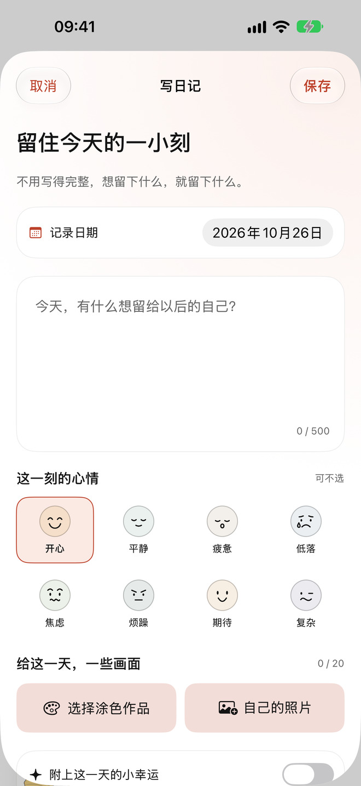

一页画，一点心情
给今天，
一点颜色。
一笔一画，慢慢涂。把心情、作品和几句话，留在只属于你的日记里。
免费开始 · 无广告 · 无需注册



01 / 翻开画册
14 本画册，
168 次小小出走。
从一枝花、一只猫，到四时风物与幻想小屋。每幅画都附有配色参考，借几种颜色就能开始，也能涂成自己的模样。



精选画稿配色参考。免费从 12 幅入门画稿和每日轮换的一页开始；完整画库由「完整创作权限」解锁。部分画稿使用 AI 辅助创作，并经人工整理、校线与配色。

02 / 把时间交给笔尖
喜欢怎样涂，
就怎样涂。
轻点填色，也可以一笔笔铺开水彩、铅笔与岩彩的质感。放大一片叶子，慢慢画；停下来时，进度会自动保存。
- 随手涂，也能有层次铅笔、水彩、蜡笔、岩彩……所有画笔免费使用。
- 慢慢试，不怕画错填色、图层、色盘与撤销重做，让想法一点点成形。
- 换一块大画布兼容的 iPad 支持 Apple Pencil；作品可导出 PNG、分享卡片与绘画回放。
03 / 留住今天
不必画完，
也值得记下。
涂到一半的画，也可以成为今天的日记。写几句话，放一张照片，记一个心情；或者什么都不写，只留下一抹颜色。
作品 · 照片 · 文字 · 可选心情日记可单独上锁，内容保存在你的设备上。

安静，也是一种用心
只属于你的
一小片安静。
不用把生活交给一个新账号。作品与日记保存在本机，由你决定什么时候备份、带走或分享。
- 01
不用注册，没有广告
打开就能开始，没有广告或行为追踪。
- 02
作品与日记，保存在本机
日记可单独上锁。涂色、日记与导出都能离线使用。
- 03
留得住，也带得走
每一笔自动保存，也可手动导出备份，在新设备上导入。
免费版可以做什么？
12 幅入门画稿、每日轮换画稿、全部画笔、私人日记与备份，以及标准 2048 像素 PNG 导出。回放与分享卡片带有轻量 App 标识。
完整创作权限包含什么？
解锁完整画库、辅助上色、空白画布、照片与线稿导入，以及 4096 像素和透明 PNG 导出。回放与分享卡片可不带 App 标识。
如何购买或恢复购买？
可选订阅或一次购买永久使用，具体方案与本地价格以 Apple 购买页为准。订阅自动续费；符合条件的账户可享试用。永久买断不续费，也不会自动取消已有订阅。有效购买可在 App 内恢复。